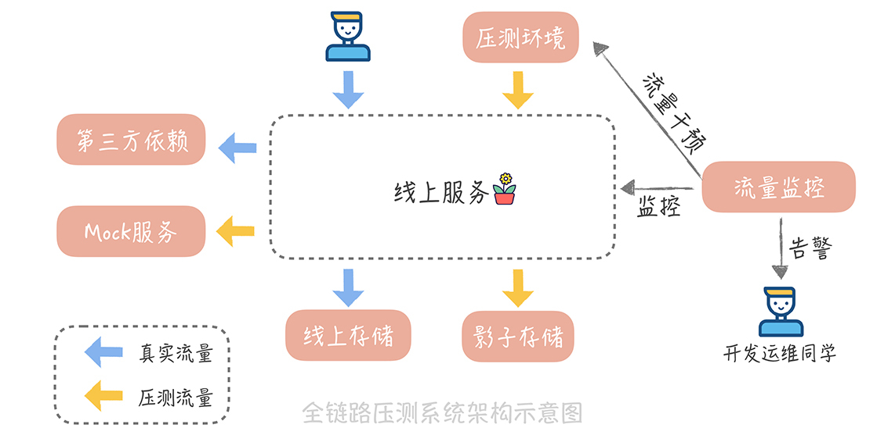

- 00 开篇词 为什么你要学习高并发系统设计？.md.html
- 01 高并发系统：它的通用设计方法是什么？.md.html
- 02 架构分层：我们为什么一定要这么做？.md.html
- 03 系统设计目标（一）：如何提升系统性能？.md.html
- 04 系统设计目标（二）：系统怎样做到高可用？.md.html
- 05 系统设计目标（三）：如何让系统易于扩展？.md.html
- 06 面试现场第一期：当问到组件实现原理时，面试官是在刁难你吗？.md.html
- 07 池化技术：如何减少频繁创建数据库连接的性能损耗？.md.html
- 08 数据库优化方案（一）：查询请求增加时，如何做主从分离？.md.html
- 09 数据库优化方案（二）：写入数据量增加时，如何实现分库分表？.md.html
- 10 发号器：如何保证分库分表后ID的全局唯一性？.md.html
- 11 NoSQL：在高并发场景下，数据库和NoSQL如何做到互补？.md.html
- 12 缓存：数据库成为瓶颈后，动态数据的查询要如何加速？.md.html
- 13 缓存的使用姿势（一）：如何选择缓存的读写策略？.md.html
- 14 缓存的使用姿势（二）：缓存如何做到高可用？.md.html
- 15 缓存的使用姿势（三）：缓存穿透了怎么办？.md.html
- 16 CDN：静态资源如何加速？.md.html
- 17 消息队列：秒杀时如何处理每秒上万次的下单请求？.md.html
- 18 消息投递：如何保证消息仅仅被消费一次？.md.html
- 19 消息队列：如何降低消息队列系统中消息的延迟？.md.html
- 20 面试现场第二期：当问到项目经历时，面试官究竟想要了解什么？.md.html
- 21 系统架构：每秒1万次请求的系统要做服务化拆分吗？.md.html
- 22 微服务架构：微服务化后，系统架构要如何改造？.md.html
- 23 RPC框架：10万QPS下如何实现毫秒级的服务调用？.md.html
- 24 注册中心：分布式系统如何寻址？.md.html
- 25 分布式Trace：横跨几十个分布式组件的慢请求要如何排查？.md.html
- 26 负载均衡：怎样提升系统的横向扩展能力？.md.html
- 27 API网关：系统的门面要如何做呢？.md.html
- 28 多机房部署：跨地域的分布式系统如何做？.md.html
- 29 Service Mesh：如何屏蔽服务化系统的服务治理细节？.md.html
- 30 给系统加上眼睛：服务端监控要怎么做？.md.html
- 31 应用性能管理：用户的使用体验应该如何监控？.md.html
- 32 压力测试：怎样设计全链路压力测试平台？.md.html
- 33 配置管理：成千上万的配置项要如何管理？.md.html
- 34 降级熔断：如何屏蔽非核心系统故障的影响？.md.html
- 35 流量控制：高并发系统中我们如何操纵流量？.md.html
- 36 面试现场第三期：你要如何准备一场技术面试呢？.md.html
- 37 计数系统设计（一）：面对海量数据的计数器要如何做？.md.html
- 38 计数系统设计（二）：50万QPS下如何设计未读数系统？.md.html
- 39 信息流设计（一）：通用信息流系统的推模式要如何做？.md.html
- 40 信息流设计（二）：通用信息流系统的拉模式要如何做？.md.html
- 加餐 数据的迁移应该如何做？.md.html
- 期中测试 10道高并发系统设计题目自测.md.html
- 用户故事 从“心”出发，我还有无数个可能.md.html
- 结束语 学不可以已.md.html
32 压力测试：怎样设计全链路压力测试平台？
你好，我是唐扬。
经过两节课的学习，我们已经搭建了服务端和客户端的监控，通过监控的报表和一些报警规则的设置，你可以实时地跟踪和解决垂直电商系统中出现的问题了。不过，你不能掉以轻心，因为监控只能发现目前系统中已经存在的问题，对于未来可能发生的性能问题是无能为力的。
一旦你的系统流量有大的增长，比如类似“双十一”的流量，那么你在面临性能问题时就可能会手足无措。为了解决后顾之忧，你需要了解在流量增长若干倍的时候，系统的哪些组件或者服务会成为整体系统的瓶颈点，这时你就需要做一次全链路的压力测试。
那么，什么是压力测试呢？要如何来做全链路的压测呢？这两个问题就是本节课重点讲解的内容。
什么是压力测试
压力测试（简称为压测）这个名词儿，你在业界的分享中一定听过很多次，当然了，你也可能在项目的研发过程中做过压力测试，所以，对于你来说，压力测试并不陌生。
不过，我想让你回想一下，自己是怎么做压力测试的？是不是像很多同学一样：先搭建一套与正式环境功能相同的测试环境，并且导入或者生成一批测试数据，然后在另一台服务器，启动多个线程并发地调用需要压测的接口（接口的参数一般也会设置成相同的，比如，想要压测获取商品信息的接口，那么压测时会使用同一个商品 ID）。最后，通过统计访问日志，或者查看测试环境的监控系统，来记录最终压测 QPS 是多少之后，直接交差？
这么做压力测试其实是不正确的，错误之处主要有以下几点：
\1. 首先，做压力测试时，最好使用线上的数据和线上的环境，因为，你无法确定自己搭建的测试环境与正式环境的差异，是否会影响到压力测试的结果；
\2. 其次，压力测试时不能使用模拟的请求，而是要使用线上的流量。你可以通过拷贝流量的方式，把线上流量拷贝一份到压力测试环境。因为模拟流量的访问模型，和线上流量相差很大，会对压力测试的结果产生比较大的影响。
比如，你在获取商品信息的时候，线上的流量会获取不同商品的数据，这些商品的数据有的命中了缓存，有的没有命中缓存。如果使用同一个商品 ID 来做压力测试，那么只有第一次请求没有命中缓存，而在请求之后会将数据库中的数据回种到缓存，后续的请求就一定会命中缓存了，这种压力测试的数据就不具备参考性了。
\3. 不要从一台服务器发起流量，这样很容易达到这台服务器性能瓶颈，从而导致压力测试的 QPS 上不去，最终影响压力测试的结果。而且，为了尽量真实地模拟用户请求，我们倾向于把流量产生的机器，放在离用户更近的位置，比如放在 CDN 节点上。如果没有这个条件，那么可以放在不同的机房中，这样可以尽量保证压力测试结果的真实性。
之所以有很多同学出现这个问题，主要是对压力测试的概念没有完全理解，以为只要是使用多个线程并发的请求服务接口，就算是对接口进行压力测试了。
**那么究竟什么是压力测试呢？**压力测试指的是，在高并发大流量下，进行的测试，测试人员可以通过观察系统在峰值负载下的表现，从而找到系统中存在的性能隐患。
与监控一样，压力测试是一种常见的，发现系统中存在问题的方式，也是保障系统可用性和稳定性的重要手段。而在压力测试的过程中，我们不能只针对某一个核心模块来做压测，而需要将接入层、所有后端服务、数据库、缓存、消息队列、中间件以及依赖的第三方服务系统及其资源，都纳入压力测试的目标之中。因为，一旦用户的访问行为增加，包含上述组件服务的整个链路都会受到不确定的大流量的冲击，因此，它们都需要依赖压力测试来发现可能存在的性能瓶颈，这种针对整个调用链路执行的压力测试也称为“全链路压测”。
由于在互联网项目中，功能迭代的速度很快，系统的复杂性也变得越来越高，新增加的功能和代码很可能会成为新的性能瓶颈点。也许半年前做压力测试时，单台机器可以承担每秒 1000 次请求，现在很可能就承担每秒 800 次请求了。所以，压力测试应该作为系统稳定性保障的常规手段，周期性地进行。
但是，通常做一次全链路压力测试，需要联合 DBA、运维、依赖服务方、中间件架构等多个团队，一起协调进行，无论是人力成本还是沟通协调的成本都比较高。同时，在压力测试的过程中，如果没有很好的监控机制，那么还会对线上系统造成不利的影响。为了解决这些问题，我们需要搭建一套自动化的全链路压测平台，来降低成本和风险。
如何搭建全链路压测平台
搭建全链路压测平台，主要有两个关键点。
一点是流量的隔离。由于压力测试是在正式环境进行，所以需要区分压力测试流量和正式流量，这样可以针对压力测试的流量做单独的处理。
另一点是风险的控制。也就是，尽量避免压力测试对于正常访问用户的影响，因此，一般来说全链路压测平台需要包含以下几个模块：
流量构造和产生模块；
压测数据隔离模块；
系统健康度检查和压测流量干预模块。
整体压测平台的架构图可以是下面这样的：

为了让你能够更清晰地了解每一个模块是如何实现的，方便你来设计适合自身业务的全链路压测平台，我会对压测平台的每一个模块做更细致地介绍。先来看看压力测试的流量是如何产生的。
压测数据的产生
一般来说，我们系统的入口流量是来自于客户端的 HTTP 请求，所以，我们会考虑在系统高峰期时，将这些入口流量拷贝一份，在经过一些流量清洗的工作之后（比如过滤一些无效的请求），将数据存储在像是 HBase、MongoDB 这些 NoSQL 存储组件，或者亚马逊 S3 这些云存储服务中，我们称之为流量数据工厂。
这样，当我们要压测的时候，就可以从这个工厂中获取数据，将数据切分多份后下发到多个压测节点上了，在这里，我想强调几个，你需要特殊注意的点。
首先，我们可以使用多种方式来实现流量的拷贝。最简单的一种方式：直接拷贝负载均衡服务器的访问日志，数据就以文本的方式写入到流量数据工厂中，但是这样产生的数据在发起压测时，需要自己写解析的脚本来解析访问日志，会增加压测时候的成本，不太建议使用。
另一种方式：通过一些开源的工具来实现流量的拷贝。这里，我推荐一款轻型的流量拷贝工具GoReplay，它可以劫持本机某一个端口的流量，将它们记录在文件中，传送到流量数据工厂中。在压测时，你也可以使用这个工具进行加速的流量回放，这样就可以实现对正式环境的压力测试了。
其次，如上文中提到的，我们在下发压测流量时，需要保证下发流量的节点与用户更加接近，起码不能和服务部署节点在同一个机房中，这样可以尽量保证压测数据的真实性。
另外，我们还需要对压测流量染色，也就是增加压测标记。在实际项目中，我会在 HTTP 的请求头中增加一个标记项，比如说叫做 is stress test，在流量拷贝之后，批量在请求中增加这个标记项，再写入到数据流量工厂中。
数据如何隔离
将压测流量拷贝下来的同时，我们也需要考虑对系统做改造，以实现压测流量和正式流量的隔离，这样一来就会尽量避免压测对线上系统的影响，一般来说，我们需要做两方面的事情。
一方面，针对读取数据的请求（一般称之为下行流量），我们会针对某些不能压测的服务或者组件，做 Mock 或者特殊的处理。举个例子。
在业务开发中，我们一般会依据请求，记录用户的行为，比如，用户请求了某个商品的页面，我们会记录这个商品多了一次浏览的行为，这些行为数据会写入一份单独的大数据日志中，再传输给数据分析部门，形成业务报表给到产品或者老板做业务的分析决策。
在压测的时候，肯定会增加这些行为数据，比如原本一天商品页面的浏览行为是一亿次，而压测之后变成了十亿次，这样就会对业务报表产生影响，影响后续的产品方向的决策。因此，我们对于这些压测产生的用户行为做特殊处理，不再记录到大数据日志中。
再比如，我们系统会依赖一些推荐服务，推荐一些你可能感兴趣的商品，但是这些数据的展示有一个特点就是，展示过的商品就不再会被推荐出来。如果你的压测流量经过这些推荐服务，大量的商品就会被压测流量请求到，线上的用户就不会再看到这些商品了，也就会影响推荐的效果。
所以，我们需要 Mock 这些推荐服务，让不带有压测标记的请求经过推荐服务，而让带有压测标记的请求经过 Mock 服务。搭建 Mock 服务，你需要注意一点：这些 Mock 服务最好部署在真实服务所在的机房，这样可以尽量模拟真实的服务部署结构，提高压测结果的真实性。
另一方面，针对写入数据的请求（一般称之为上行流量），我们会把压测流量产生的数据，写入到影子库，也就是和线上数据存储，完全隔离的一份存储系统中。针对不同的存储类型，我们会使用不同的影子库的搭建方式：
如果数据存储在 MySQL 中，我们可以在同一个 MySQL 实例，不同的 Schema 中创建一套和线上相同的库表结构，并且把线上的数据也导入进来。
而如果数据是放在 Redis 中，我们对压测流量产生的数据，增加一个统一的前缀，存储在同一份存储中。
还有一些数据会存储在 Elasticsearch 中，针对这部分数据，我们可以放在另外一个单独的索引表中。
通过对下行流量的特殊处理以及对上行流量增加影子库的方式，我们就可以实现压测流量的隔离了。
压力测试如何实施
在拷贝了线上流量和完成了对线上系统的改造之后，我们就可以进行压力测试的实施了。在此之前，一般会设立一个压力测试的目标，比如说，整体系统的 QPS 需要达到每秒 20 万。
不过，在压测时，不会一下子把请求量增加到每秒 20 万次，而是按照一定的步长（比如每次压测增加一万 QPS），逐渐地增加流量。在增加一次流量之后，让系统稳定运行一段时间，观察系统在性能上的表现。如果发现依赖的服务或者组件出现了瓶颈，可以先减少压测流量，比如，回退到上一次压测的 QPS，保证服务的稳定，再针对此服务或者组件进行扩容，然后再继续增加流量压测。
为了能够减少压力测试过程中，人力投入成本，可以开发一个流量监控的组件，在这个组件中，预先设定一些性能阈值。比如，容器的 CPU 使用率的阈值可以设定为 60%～70%；系统的平均响应时间的上限可以设定为 1 秒；系统慢请求的比例设置为 1% 等等。
当系统性能达到这个阈值之后，流量监控组件可以及时发现，并且通知压测流量下发组件减少压测流量，并且发送报警给到开发和运维的同学，开发和运维同学就迅速地排查性能瓶颈，在解决问题或者扩容之后再继续执行压测。
业界关于全链路压测平台的探索有很多，一些大厂比如阿里、京东、美团和微博都有了适合自身业务的全链路压测平台。在我看来，这些压测平台万变不离其宗，都无非是经过流量拷贝、流量染色隔离、打压、监控熔断等步骤，与本课程中介绍的核心思想都是相通的。因此，你在考虑自研适合自己项目的全链路压测平台时，也可以遵循这个成熟的套路。
课程小结
本节课，我带你了解了做压力测试常见的误区，以及自动化的全链路压测平台的搭建过程，这里你需要了解的重点是：
压力测试是一种发现系统性能隐患的重要手段，所以应该尽量使用正式的环境和数据；
对压测的流量需要增加标记，这样就可以通过 Mock 第三方依赖服务和影子库的方式来实现压测数据和正式数据的隔离；
压测时，应该实时地对系统性能指标做监控和告警，及时地对出现瓶颈的资源或者服务扩容，避免对正式环境产生影响。
**这套全链路的压力测试系统对于我们来说有三方面的价值：**其一，它可以帮助我们发现系统中可能出现的性能瓶颈，方便我们提前准备预案来应对；其次，它也可以为我们做容量评估，提供数据上的支撑；最后，我们也可以在压测的时候做预案演练，因为压测一般会安排在流量的低峰期进行，这样我们可以降级一些服务来验证预案效果，并且可以尽量减少对线上用户的影响。所以，随着你的系统流量的快速增长，你也需要及时考虑搭建这么一套全链路压测平台，来保证你的系统的稳定性。